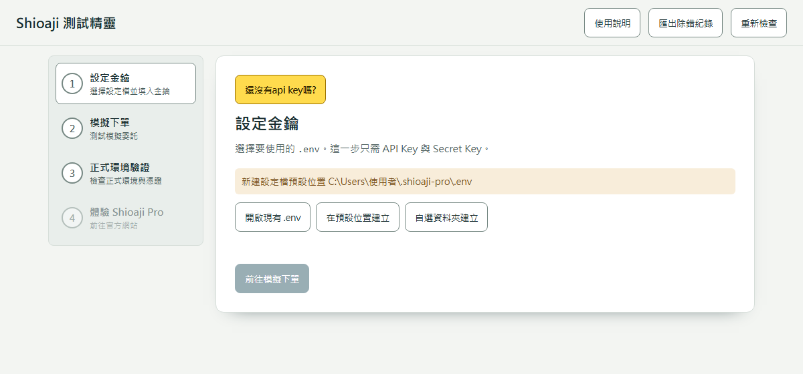

特色
每個步驟都有檢核結果
檢核結果會標出通過、未通過或未測。美股模擬委託若暫時沒有確認回報，會顯示「待確認」。
金鑰保存在本機
測試時由本機連接永豐官方 API。執行輸出和除錯紀錄會遮罩金鑰與身分證字號。
同一份設定可匯入 Shioaji Pro
可沿用現有 .env，也能自行選擇新建位置。預設優先使用偵測到的 eKey 憑證資料夾，其次是使用者目錄下的 .shioaji-pro。
單一 Windows 安裝檔
內建 Python 與所需套件，安裝於目前的 Windows 使用者帳號。精靈使用 Microsoft Edge 或 Google Chrome 開啟視窗。
兩套測試，對應永豐開通流程
A 測試模擬登入與委託。B 檢查正式登入、帳戶簽署狀態與憑證，全程只查詢、不下單。
A模擬登入＋模擬下單測試
- A1✓模擬環境登入（API Key／Secret Key）
- A2✓證券帳戶
- A3✓證券模擬下單（永豐金 2890 平盤價 1 張）
- A4✓期貨帳戶（選測）
- A5✓期貨模擬下單（選測）
- A6✓美股複委託帳戶（選測）
- A7✓美股複委託模擬限價單（選測）
首次完成模擬下單驗證後，建議等 30 分鐘，讓永豐處理 API 授權，再驗證或使用正式環境。
B正式環境憑證測試
- B1✓正式環境登入
- B2✓證券 API 簽署＋模擬測試審核（signed）
- B3✓期貨 API 簽署狀態（選測）
- B4✓憑證檔存在（Sinopac.pfx／SJ_CA_PATH）
- B5✓憑證啟用（憑證密碼）
- B6✓憑證有效期（顯示到期日）
- B7✓美股複委託帳戶簽署狀態（選測）
密碼錯、路徑錯、金鑰打錯字，各自會有明確的中文原因，不用看英文錯誤訊息猜。
精靈的四個步驟
- 設定金鑰。選取已有的
.env，或填寫 API Key 和 Secret Key 建立新設定。 - 模擬下單。驗證台股模擬委託，可加測期貨／選擇權與美股複委託。
- 正式環境驗證。選擇憑證檔並填入密碼，檢查正式登入、帳戶簽署狀態與憑證。
- 體驗 Shioaji Pro。首次登入時選「從 .env 匯入」，載入剛才驗證的設定檔。開啟 Shioaji Pro 官網
還沒有金鑰？先看永豐申請教學。Secret Key 只會顯示一次，複製並妥善儲存後再關閉頁面。
安全與免責聲明
下載或使用本軟體前請先讀完；繼續使用即表示你同意以下條款。
- 本軟體為個人開發的開源工具，非永豐金證券官方軟體，與永豐金證券無任何隸屬或合作關係。
- 金鑰只在你的電腦與永豐官方 API 之間傳輸。API Key、Secret Key 和憑證密碼會儲存在你所選的
.env。測試時由本機子行程讀取，透過永豐官方 Shioaji SDK 加密連線。精靈在台股及期貨測試限台灣 IP 的時段檢查公網位置時，會向ipinfo.io查詢公網 IP 所屬國家。該查詢只會讓服務得知你的公網 IP，不會傳送金鑰、憑證、密碼或帳戶資料。 - 金鑰用於模擬測試（A）與正式驗證（B）。A 只在永豐模擬環境送出委託。B 只登入並檢查帳戶簽署狀態與憑證，不送出委託。
- 金鑰與憑證由你自行保管。
.env以明文儲存金鑰與憑證密碼。請妥善保存設定檔及憑證，避免分享、上傳或放進雲端同步資料夾。本軟體與開發者不負金鑰或憑證保管責任。 - 本軟體按「現狀」提供，不提供任何明示或默示之擔保。因使用本軟體、金鑰或憑證外洩、帳戶操作、永豐服務或規則變更所造成之任何損失（含交易損失），開發者概不負責。
安全設計細節見 README 的「安全與免責聲明」。閱讀專案說明
常見問題
Windows 顯示 SmartScreen 提示怎麼辦？
先確認安裝檔來自本專案的 GitHub Release，並與該頁公布的 SHA-256 對照。若安全軟體仍攔截，請附上警示名稱到 GitHub Issues 回報。
需要先裝 Python 或其他東西嗎？
安裝程式已內建 Python 與所需套件。請使用 Windows 10／11（x64）和 Microsoft Edge 或 Google Chrome。
資料夾可以放在 OneDrive／Google 雲端硬碟裡嗎？
請將 .env 與憑證存在本機不會同步的資料夾，避免同步軟體上傳或鎖住這些檔案。
測試失敗要怎麼回報？
點選「匯出除錯紀錄」取得經遮罩的 shioaji_wizard-debug-*.log，再到 GitHub Issues 回報。請勿附上 .env 或憑證檔。
舊版的設定可以沿用嗎？
在第一步選「開啟現有 .env」，選取舊版正在使用的設定檔。正式環境驗證時可另外選擇原有的憑證。